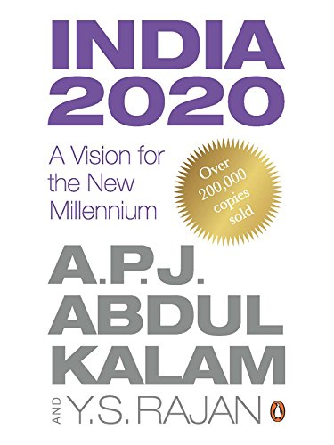
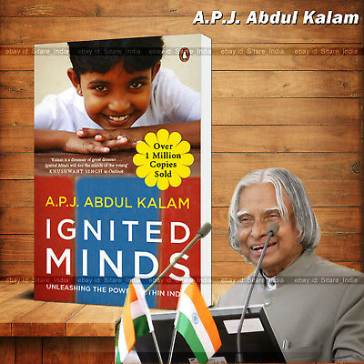
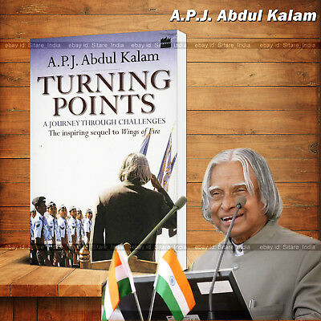

A. P. J. Abdul Kalam
Missile Man of India

Indian scientist and politician who played a leading role in the development of India's missile and nuclear weapons programs
Here's a timeline of A.P.J. Abdul Kalam:
- July 27, 2015 - Kalam passes away aged 83, after collapsing because of a cardiac arrest while delivering a lecture at IIM Shillong
- 2012 - Kalam launches the ‘What Can I Give Movement’, a programme for the Indian youth aimed at defeating corruption
- 2002 — 2007 - Kalam is elected the 11th President of India succeeding KR Narayanan. He won the 2002 presidential election with an electoral vote of 922,884. During his five years in office, he was fondly called ‘The People’s President'
- 1999 — 2001 - Serves as Principal Scientific Advisor to the Government of India
- 1998 - India conducts the Pokhran II nuclear tests with Kalam being one of the forces behind its success
- 1997 - Kalam is awarded the Bharat Ratna, India's highest civilian honour for his contribution to the scientific research and modernisation of defence technology in India.
- 1992 — 1999 - Kalam is appointed as the Chief Scientific Adviser to the Prime Minister and the Secretary of the DRDO
- 1990 - Kalam is awarded the Padma Vibhushan, India’s second highest civilian honour
- 1981 - Recieves the Padma Bhushan for his contribution to the field of science and technology
- 1980 — 1990 - As the chief of the Integrated Guided Missile Development Programme, he is credited with the development and operationalisation of Agni and Prithvi missiles.
- 1980 - Lead's India's entry in the Space club by putting the Rohini satellite in Earth's orbit with the first indigenous SLV-III
- 1969 - Kalam moves to the Indian Space Research Organisation (ISRO) where he helms India's first Satellite Launch Vehicle (SLV-III)
- 1960 -Kalam completes his degree in Aeronautical Engineering from Madras Institute of Technology (MIT) and joins the Defense Research and Development Organization (DRDO) as scientist.
- 1954 -Kalam graduates in physics from Saint Joseph's College, Tiruchirappalli. He moves to Madras to pursue further education after graduation.
- 1931 -Avul Pakir Jainulabdeen Abdul Kalam was born to Jainulabdeen, a boat owner, and homemaker Ashiamma. He went to Ramanathapuram Schwartz Matriculation School and worked from an early age to supplement the family income.
Interested to read more about this incredible human being on his Wikipedia entry
Some Inspiring Books By DR. A.P.J. ABDUL KALAM

India 2020: A Vision for the New Millennium
India 2020: A Vision for the New Millennium
Publishing year: 1998

Wings of Fire: An Autobiography
Publishing year: 1999

Ignited Minds: Unleashing the Power within India
Ignited Minds: Unleashing the Power within India
Publishing year: 2002

Turning Points: A Journey through Challenges